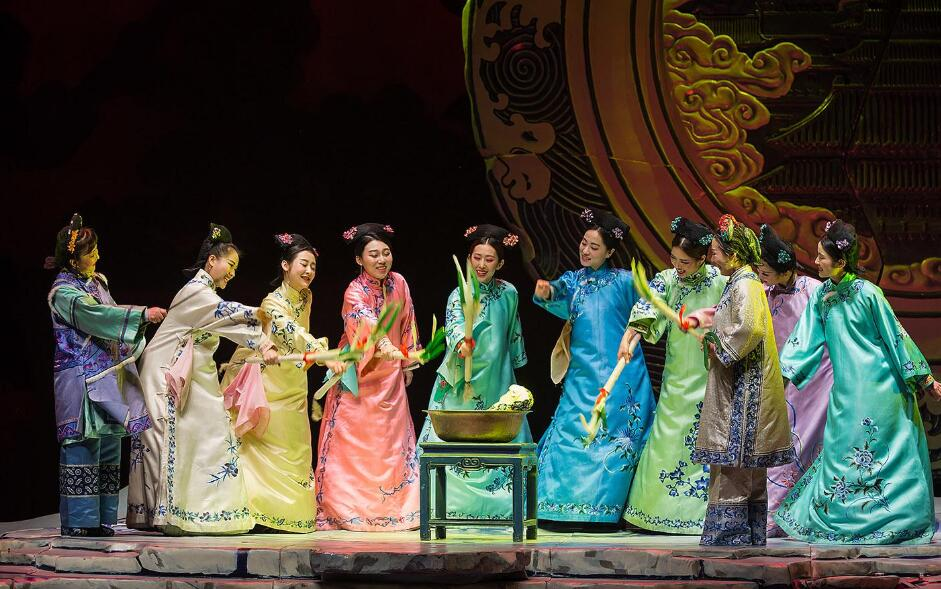

北京曲剧

北京曲剧，是地方传统戏曲之一。该戏曲的表演程式，也没有严格的行当之分，它以演出现代戏而崛起于戏曲舞台，在表演上以生活气息浓郁而见长。北京曲剧从形成到现在，已经演出了一百多个剧目。有影响的现代题材剧目有《罗汉钱》《妇女代表张桂荣》《喜笑颜开》等。
北京曲剧是地方传统戏曲之一，他是以北京流行的曲艺单弦牌子曲为主发展而成，初名“曲艺剧” ，1952年始正式定名为“曲剧” 。单弦牌子曲,也称“八角鼓”,是采用牌子曲联缀体，三弦伴奏,八角鼓击节演唱故事的一种说唱艺术,曲调丰富，形式多样。它的主要曲调有〔太平年〕、〔云苏调〕、〔罗江怨〕、〔南城调〕、〔剪靛花〕、〔湖广调〕、〔南锣北鼓〕、〔数唱〕等，大都出自民间小曲，有的擅长抒情,有的适合叙事,成为曲剧选用唱腔曲调和改编创造新唱腔曲调的主要来源。单弦的演唱形式，有单唱、对口唱（拆唱）、群唱和彩唱。其中拆唱、彩唱等已发展为装扮角色的简单表演（仍保持有说唱的特点）。
北京曲剧在逐步向舞台表演艺术过渡时，曾吸收和借鉴戏曲、话剧等形式，作为创造曲剧的基础。1950年，北京曲艺演员，开始尝试演出现代生活剧目。1951年夏至1952年初，北京曲艺团选用单弦牌子曲，并吸收大鼓、琴书的唱腔,排练和演出作家老舍编写的现代戏《柳树井》,受到观众的热烈欢迎。接着又陆续排演《张桂容》 （据话剧《妇女代表》改编）等现代戏。在以反映现实生活为主的情况下，形成了曲剧自己的风格和特色。随后，又排演了清装戏和古装戏，如《杨乃武与小白菜》，并摄制成影片。1979年北京曲艺团改名北京曲艺曲剧团。
图片展示
-
曲剧1
-
曲剧2
-
曲剧3